第四章 优化买入过程
我们已经学习了①首先判断市场的主要趋势，②然后发掘其中最好的行业，现在我们准备进入下一步。我们现在要做的就是③从最好的板块中筛选出我们要买入的个股。我们怎么来判断行业中哪些股票是最值得买入的呢？真有办法可以预测出哪些股票不仅可能上涨而且可能成为大牛股吗？
毫无疑问！虽然没有任何一个体系可以完全准确地预测未来，但是我们可以学习一些简单的规则来大幅提高我们投资成功的可能性。
阻力越小越好
前面我已经解释过阻力的概念，现在我们再快速地回顾一下，接着更深入地研究它。这对于你以后的投资业绩非常重要，因此我们要仔细地复习。在图4-1中，股票XYZ在急速下跌后在18~20元形成了一个交易区间。在这个交易区间存在期间，18元附近成为一个暂时的支撑位，20元附近成为一个暂时的阻力位，因为每次反弹至20元附近都失败而返。接着，当股价在交易区间内曲折盘桓数周之后，向下突破18元的支撑。这是明显的利空信号，意味着新一轮下跌趋势的开始。在这轮新的下跌之后，XYZ在13元的低点附近企稳。接着它进入了一个新的交易区间，构筑了一个坚实的底部。这时，在13元附近形成了新的支撑，15元附近形成了新的阻力。最后，XYZ向上突破了15元的阻力位。更重要的是，突破点位于移动平均线的上方。
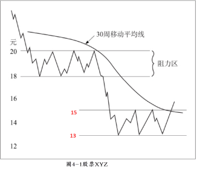
你现在已经明白这只股票可以买入。但是你应该买入它吗？不一定。虽然这只股票很可能会上涨并让你赚钱，但这还不够。一开始，你可能觉得这简直不可思议。你很可能抱怨：“史丹在说些什么？我之前买入很多熊股，现在终于学会看突破确认的图形，他又告诉我这只股票会上涨，而我却不应该买它！”
你只要和我一起再深入地思考一下，就会发现这个建议并没有脱离我一贯的看法。如果你买入了股票XYZ，并不是一件坏事一一你会在它上面赚钱。但我不仅仅是想让你赚钱，而且是想让你赚大钱！
在经济学上有个概念，称为机会成本，这里就是机会成本概念极好的应用。抛开理论上复杂的叙述，机会成本其实就是说我们拥有有限的资源，无论是2．5万元还是2500万元。因此我们必须把有限的资源最大化——在这个例子中就是你的股票市值。如果我们买入股票XYZ，它上涨了20%，但是股票ABC在同一时期却上涨了200%，那么我们就失去了潜在的盈利机会。因此，我们要做的就是发现和操作那些最牛的股票，同时将那些一般的剔除掉，留给别人。
现在回到图4-1，我来告诉你为什么这是只B-型的股票。（因为前后2个交易区间的距离过近）
当XYZ向上突破15元的阻力位释放出一个利好信号时，你必须注意下一个阻力位在何处。在这个例子中下一个阻力位在18元，而这正好是前一个交易区间的底部支撑位。请记住，支撑位一旦被跌破，之后股价反弹到那里，那里就成为阻力位。如果XYZ确实向上突破了18元这个阻力位，你会发现它要上涨到20元会非常费力。因此整个18~20元代表了潜在的重要阻力区域。这不是说这只股票就永远不会越过这个区域，而是意味着价格要超越这个区域需要大量的买盘才能推动。因此它很可能在该区域停留较长的一段时间。即使小概率事件发生了，这只股票快速上涨越过了这个区域，其上涨势头也会变得疲软并且需要重新整理。这与一个人必须爬上六楼才能到达他的公寓而另一个人可以很容易地坐电梯到达没有区别。很明显，谁会剩下更多的能量？股市也具有一样的道理。如果股票XYZ和ABC都从第一阶段向上突破，并且在接下来的几个回合中都获得了50万股的买单，哪一只股票会走得更远？是在上涨通道中几乎没有阻力的那只，还是拥有大量卖单、上涨阻力巨大的那只？答案显而易见。
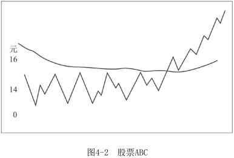
现在让我们看看图4-2中股票ABC的图形。它与股票XYZ同属一个行业，正向上突破阻力位和均线。但与XYZ在突破点上方不远处就有阻力区域不同，图形中ABC并没有上方阻力位存在。虽然ABC以前曾以更高的价格被交易过，但在过去两年多的时间里都没有出现过这样的价格。虽然几年前有过阻力区域，但我的研究发现，阻力区域距离现在的时间越长，其有效性就越低。这与阻力位的形成有关。
那些以较高的价格买入股票的人遭遇了股价下跌，之后股价反弹至他们的买入价附近，此时他们想要卖出解套，这就形成了阻力区域。随着时间推移，越来越多的投资者在每个交易年份结束时认赔离场。因此如果阻力区域距今已有几年，就不是什么大问题。
现在剩下判断个股图形的最后一步——在行情图上检查其长期的走势。观察过去10年每年的最高价和最低价。如果图形上不存在阻力区域，也就是说这只股票在过去10年中没有以比现在更高的价格交易过，那么你真的应该兴奋，因为你正在观察一只绝佳的股票。
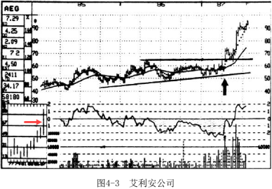
这里有几个现实的例子可以进一步证明以上的理论。请看图4-3，当艾利安公司的股价在1987年向上突破其1年来盘整的交易区间顶部时，在图形上已经没有阻力区域了。检验长期走势，发现也是一路绿灯、畅通无阻。在过去10年中，没有高于此价格水平的阻力区域存在（见图4-3长期走势图中的箭头）。因此当艾利安迅速上涨30%时我们并不感到奇怪，因为买方完全没有遇到阻力。如果一只股票的向上突破使其价格创出历史新高，这是最乐观的一种买入机会。想想，没有人遭受损失，再上涨一两个点也不会有人想抛售。所以买方力量将会对股价产生爆炸性的影响。另外两个利好指标是：①急剧放大的成交量和②明显改善的相对强度线。
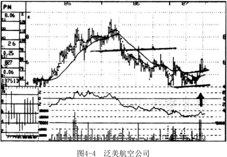
现在请看图4-4泛美航空公司的股票图形，这是1987年表现优异的航空业股票中的一只。虽然这只股票向上突破了底部区域，股价站上了趋势线和移动平均线，却不能和艾利安公司相提并论。
因为这只股票在6．5元附近存在一个阻力区域，1986年末的反弹就在这里结束。
更糟糕的是，在7元附近存在很大的卖压，泛美航空的股价于1986年初在该价位向下突破，其后股价快速下跌至4元。
最后，当你查看其股价长期走势时，你会很明显地发现在8元上方还有重要的阻力区域：1983—1986年，这只股票曾在8元处达到每四年一次的顶点。
如果艾利安公司的股票是A+，那么泛美航空公司就是C-。
除了沉重的上方阻力外，泛美航空还有其他不利的技术指标：①底部阶段持续时间相对较短；②相对强度线表现平平；③成交量也一般。记住，如果你非得操作这只股票，那么还是应买入而不是卖空，但你没有必要对每一只股票都进行投资，而且你没有必要买入每一只处于第二阶段的股票——你只需买入那些表现出众的股票。
你明白应该寻找什么样的股票了吗？仅找到一只处于第二阶段的股票是不够的，即使它的图形不错。还有其他的一些指标需要检查，我们待会儿将仔细讲解这些指标。但是最重要的指标之一就是上方阻力位于何处。
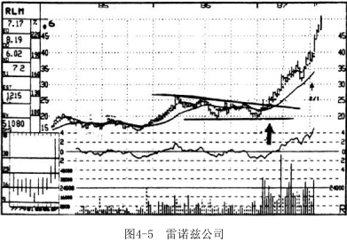
还有另一个案例可以进一步说明这种技巧的运用。雷诺兹公司是铝行业中的一家公司，铝行业1987年表现很好。1987年初，雷诺兹向上突破了持续一年的交易区间，显示出非常强劲的上涨信号。瞟一眼图4-5就可以发现在过去两年半里没有此次上涨的阻力区域存在。接着深入看一下长期股价走势图，发现这只股票创下了10年来的新高。就是它了！你应该迅速下达买入指令，因为它的图形满足我们一直强调的所有标准：
①除了创新高这点以外，②底部的形成耗时一年，③相对强度线非常健康，④成交量也显著放大。在几个月内这只股票就上涨了一倍，因为强大的买方力量在上涨过程中没有遇到明显的阻力。
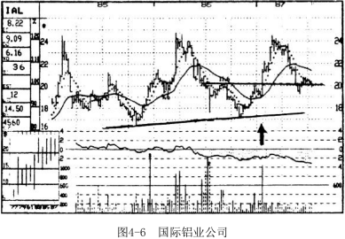
现在对比一下几乎同时向上突破的铝行业中的另一家公司——国际铝业（见图4-6）。国际铝业在1987年初股价站上20元时向上突破。然而与雷诺兹不同的是，国际铝业在24．5元附近有着较大的上涨阻力。这个阻力位不仅是1987年初的高点，还是1986年、1985年和1983年的高点。因此，这只股票表现如何呢？与雷诺兹的股票快速上涨不同的是，国际铝业的股票上涨缓慢。另外的问题是第一周之后较小的成交量、表现平平的相对强度线，以及一个相对较小的底部。6个月后，买入国际铝业的投资者可能仅仅保本，而投资于雷诺兹的人已经获利了一倍多，获得超过200%的年化收益率。
因此，请记住，下单买入之前，一定要弄清楚这只股票上涨过程中的阻力区域位于何处，有多少个阻力区域。
成交量的重要性
下一个要聚焦的重点是成交量。一旦你学会辨认这条暗含玄机的线索，就能够很好地区分表现平平的股票和爆炸性的大牛股了。即使我们永远都不知道为什么成交量如此重要，但只要仔细观察图形，你就能明白成交量是确认突破的关键。不过，我有一个好理由说明为什么成交量确实是个有效的信号。成交量是买方力量强弱的一个量度。就像我前面所说的那样，股票靠自重都能下跌，但其上升却需要巨大的买方力量来推动。这就像推着一块巨石上山，要把它推上山顶需要花费很大的能量，而一旦放手，它自身就能产生很大的向下动能。
我们的规则很简单。千万不要相信成交量没有明显放大的向上突破。图4-7清楚地显示了在技术上健康的图形应有的成交量。当股票位于底部阶段时，成交量并无规律。我的研究结果与其他很多技术分析者不同。有人认为，见底时，成交量会先突然放大——显示最后的恐慌性大跌来临，接着萎缩、枯竭——显示卖压减轻。这确实是很好的理论，但我见过许多有着不同底部成交量形态的股票最后都成了大牛股。让我们把规则变得简单且更便于盈利。
在股票形成第一阶段的过程中，我们不用去管它的成交量状况。然而，当股票向上突破其阻力区域的顶部并且站上其30周均线时，你就该密切注意成交量的变化了。就像图4-7显示的那样，在向上突破时成交量应该有明显的放大。如果不能，最好的情况就是你所买的股票表现平平，仅仅上涨几个点；而最坏的情况就是这次向上突破是一次假突破，这只股票很快会回到原来的交易区间。
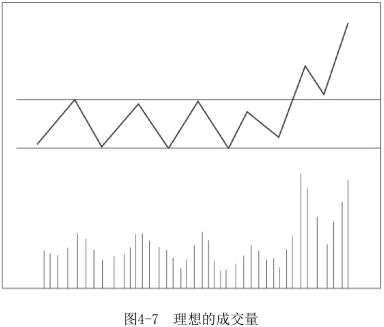
投资者总是希望能找到可靠而快捷的规则，而我们技术分析者经常会犯下轻易遵从的错误。我不认为存在一个具体的成交量标准可以被用来判定牛股。我不会根据一个随机的数字，比如过去数周成交量的4．65倍去寻找突破形态，我按下面的方法进行判断：
①单周成交量至少增大到过去几个月平均周成交量的两倍（当然，倍数越高越好）；
②或者过去三四周的成交量是过去几个月中相同时间跨度的平均成交量的两倍，同时突破当周的成交量必须放大——如果你使用的是日线图而非周线图，就看向上突破当天的成交量是否为上一周平均日成交量的两倍以上。（5日均量2倍）
无论具体的倍数是多少，如果向上突破发生时成交量没有明显增大，那么就应该远离这只股票。如果你已经用止损买单买入了这只股票，那么在它突破后价格上涨时（常常会这样）就应该迅速获利了结。
下面看一些现实中成交量放大明显或者不明显的例子。图4-8显示，当联合信号公司的股票向上突破时成交量没有明显放大。图中，这只股票过去四周的平均周成交量低于200万股。在向上突破的那周，成交量并未达到400万股的水平，更不用说超过400万股了。这是一个信号，说明买方力量不够强大，不足以推动它超越50元附近的阻力区域。因此，如我所料，联合信号的股票在49．25元处就止步不前了。如果你以止损买单在几周前于43．625元处买进，当其上涨至49元附近，即1986年的最高点时，你就应该迅速卖出获取短线收益。
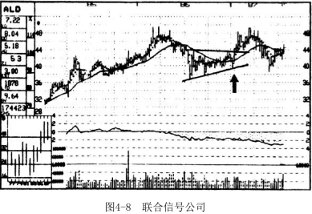
现在将这只表现平淡的股票与固特异轮胎公司相比。固特异轮胎公司是道琼斯工业指数中30只蓝筹股之一，1986年末向上突破。图4-9显示出在固特异轮胎公司的股票突破点上，大量兴奋的买单蜂拥而至。突破前四周的平均周成交量大约是220万股，但在突破的那一周成交量是这个数字的三倍，并且在接下来的两周成交量越来越大。这就是典型的A+型股票！
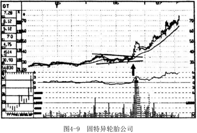
几个星期后，这只股票回调至40元左右的移动平均线附近。请注意，这次回调透露出另外一个上涨信号：成交量与峰值相比，萎缩了75%以上。如果此时的交易量仍处于峰值水平，那么你就不应该继续买入这只股票。然而，在这个例子中并非如此。上涨时成交量巨幅放大，紧接着回调时成交量明显萎缩，这给出了强劲的买入信号。这时，你应该在40元附近的低点，买入你拟持仓量的另一半。
下面还有一些例子可以帮助你掌握这个非常重要并且能够带来利润的概念。图4-10和图4-11所示的两只股票来自同样的市场周期和同样的行业，其中一只上涨超过了300%，而另一只却下跌了，这从成交量可见端倪。
图4-10中，波多黎各水泥公司的股票于1986年初在向上突破9元之前，四周平均周成交量仅有1．2万股。接着在向上突破时成交量放大了10倍，显示出某些人突然急切地在买入。这些人做得很正确，因为仅仅15个月之后这只股票就涨到了38．5元。
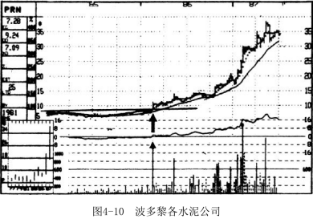
图4-11得克萨斯工业集团的股票是另一只在1986年初向上突破的股票。但这只股票突破失败。与波多黎各水泥公司的股票突破时成交量放大不同，这只股票的成交量实际上还萎缩了，比过去几个月成交量的最高水平要低。所以即使得克萨斯工业集团的股价超过31．5元，我们也不要买入它。成交量指标救了你，因为几个月之后这只股票跌至22元，而波多黎各水泥公司的股价却一飞冲天。
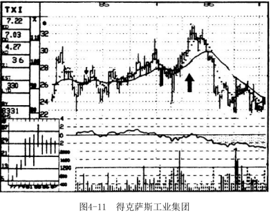
还有很多内容必须学习，但我们先停一停，复习一下现在我们已经知道要寻找的关键点。
第一，整个市场趋势是向好的。
第二，股票所在的行业也应该表现不错。
第三，从表现良好的行业选出来的这只股票应该向上突破进入了第二阶段，并且上方阻力是相比之下最小的。
第四，突破必须得到成交量的确认。
看看我们有多少条选择的标准，想想你应该如何将牛股、一般的股票以及熊股进行区分。
你看，使用技术分析方法有如此多的内容需要学习，但仍然有一些学院派的经济学家会告诉你图形是没有用的，市场交易是随机的。很多年前我也因为这些观点而不安，但现在我觉得好笑。现在你觉得所有的这些变化都是随机的吗？你怎可将1000只向上突破的股票全部输入电脑，用同样的方式处理它们，好像它们全部都是A+的股票？这就好像说在全美橄榄球联赛中，从丹・马利诺和约翰・艾尔威到一名普通的四分卫，所有人的传球都是同样的距离一样。但是，这没有什么。这些所谓的“随机漫步者”会在第二阶段向上突破时将股票卖掉，而在第四阶段价格不断下跌时买入，我们就任由他们相信图形分析是没用的好了。
相对强度
进一步缩小我们的潜力股名单时，要审视的下一个重要因素就是相对强度。这一指标用以衡量一只股票与整个市场相比表现如何。即使某只股票正在上涨，它也可能表现出较差的相对强度。如果股票XYZ上涨10%而同期的大盘指数上涨20%，那么XYZ就是相对表现较弱的，尽管它正在上涨。这只股票不仅没有引领市场的上涨，而且面对整个市场的上涨只是勉强向上拉升。因此，当整个市场下跌时，XYZ大幅下跌的可能性就相当高。相反，如果整个市场下跌20%而XYZ只下跌了10%，那么XYZ的相对强度就还不错。一旦市场转好，这只股票很可能成为上涨明星。
计算相对强度的公式很简单：
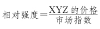
假如XYZ目前是50元，大盘指数是310点，那么XYZ的相对强度就是0．16（50／310）。
一些技术分析者每天都计算这个指标，但我觉得没这个必要。一周计算一次足以让你随着时间的推移发现某种明显的模式，这对于我们的分析才是重要的。应该在每周的同一天计算这个指标，无论是在每个周三或是周四都可以。我倾向于每个周五计算，因为周五为一周的交易画上了句号。某个星期的相对强度可能是正的，而另一个星期可能就是负的。一段时间后就能形成真实的图形。(注：5日计算一次，即一周的相对强度)
图4-12的上半部分显示了股票XYZ的价格，下半部分显示了对应的相对强度。请注意，当股价的表现乏善可陈时（在51~55元的交易区间内波动），相对强度却透露出另外的信息。相对强度线抬升是利好表现，说明它从横盘的交易区间向上突破的可能性较大。即使这只股票欺骗了我们，向相反的方向运行，我们也不要对它实行卖空操作。无论何时，当一只股票相对强度较强时，就是明确、清晰地告诉你其下跌动能有限，所以要想进行卖空操作就得找其他的股票。不过，如果你持有这只股票，你仍必须顺应向下突破的走势而卖出。
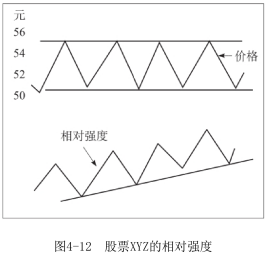
当你观察到与价格表现相比，相对强度线的表现不佳时，千万不要买入这只股票。相反，当你发现某只股票相对强度表现较好时，也不要考虑将其卖空。
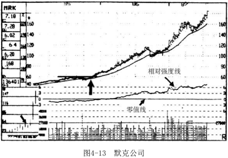
图4-13的相对强度线上还有一条零值线。在零值线之上是长期的正的相对表现，在其下是长期的负的相对表现。假如某只股票符合我们所有的筛选要求：行业表现、最小阻力、成交量放大等，同时相对强度线从负的区域移动到正的区域，那么这就提供了一个重要的长期利好指标。
对于我们后文中会讲到的卖空来说，需要与上述相对强度线相反的情况。当所有卖空的标准都符合时，还需要相对强度线向下突破零值线。不过，不要认为当相对强度线位于零值线之下时就一定不能买入这只股票，也不要认为当相对强度线位于零值线之上时就一定不能卖空。如果相对强度线形态较好并且正在从负到正的转变中，同时其他的标准都符合，那么就应该进行买入操作。但是，无论其他指标如何符合标准，如果相对强度线位于负值区域内，并且形态很差，这只股票就绝对不能买入。
现在让我们观察现实世界中有关相对强度的例子。首先，回到图4-13默克公司的股票图形。当这只股票在1985年末向上突破60元时，从长期来看它已上涨至历史新高，其上方没有阻力区域存在，此时其相对强度颇有看点。实际上，在向上突破发生之前，相对强度线就开始上升了，这是一个利好的信号。接着，当默克的股票向上突破60元时，相对强度线就进入了正的区域并在整个1986年和1987年的上半年一直保持强势。这就不奇怪为什么默克的股价上涨了三倍，成为那个时期表现最好的蓝筹股之一。
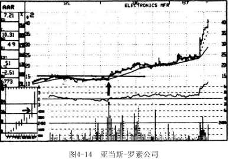
图4-14和图4-15证明了相对强度这一指标的优点。亚当斯-罗素公司（见图4-14）的股票在1986年初向上突破了其位于15元附近的阻力区域，成交量明显放大。当股价超过16元时，从长期来看，这只股票的上方已经没有阻力。在向上突破发生之前，相对强度线表现平平。但在突破前的数周，它开始漂亮地上升。当向上突破发生时，相对强度线就越过了零值线。同时这只股票也满足了我们所说的其他买入标准，因此亚当斯-罗素的股价在接下来的一年半里上涨接近三倍，我们并不意外。
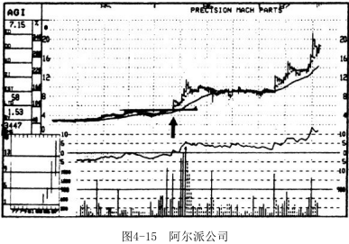
阿尔派公司（见图4-15）在1986年初的5．5元处向上突破，成交量迅速放大。从长期来看，这只股票此时上方不再有阻力并且相对强度线形态良好。尽管在突破发生之前相对强度线位于零值线的下方，但从突破前的90天起，这条曲线就开始向上。当这只股票价格超过5元时，相对强度线就位于零值线之上了——这是从相对强度方面释放出的第二个利好信号。最终这只股票如预料中那样顺利地上涨，在接下来的一年半里上涨了四倍多。
现在让我们看看硬币的另一面——看着那些没有伴随着良好相对强度的突破。尽管在这类向上突破的股票中，某些最终也能成为大牛股，但我们用不着为此惋惜。我们要寻找的是那些上涨可能性达到80%~90%的股票，而不是瞎猜。我们将它们留给赌徒吧。
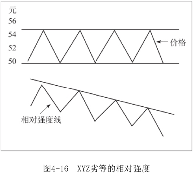
图4-16向我们显示了劣等的相对强度是什么样的。尽管股票XYZ在50~55元的交易区间内运行，相对强度线却在警告我们当心下跌。这条曲线正在下降，显示出这只股票的表现要远远弱于整个市场。因此，股价从这一横盘区间最终突破时，往下的可能性很大。即使遇到非常少见的情况，股票最终向上突破，它仍然不值得买入，因为它很可能仅是略微上涨而不太可能飙升。
下面来看看现实中的例子。图4-17中顶点公司在1987年初于8．5元处向上突破（见B点）。然而，相对强度线却警告你不要在此次突破处买入。原因如下：
第一，相对强度线位于负值区域较低处，远远低于零值线。虽然这个指标不能将这只股票从备选买入对象中排除，但它是一个预警信号。要买入的股票相对强度线最好要表现得很好，否则就别买。顶点公司就是不能买的例子。
第二，相对强度线从1986年初的最高点开始，经历了12个月的下降。
第三，当顶点公司的股票在B点向上突破时，其相对强度水平还低于A点所对应的相对强度水平，尽管B点相对于A点股价是上涨的。这样，这只股票就应该被彻底排除了。但是为了进一步引诱粗心的投资者进入，这只股票在几个月后于9125元处再次向上突破（见C点）。然而，这时的相对强度水平仍然低于股价位于前期高点时的相对强度水平（在相对强度线上，C’点对应的位置低于B’点的位置）。后来，尽管道琼斯工业指数快速上涨，顶点公司的股价却一直下跌。
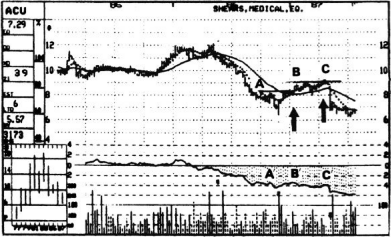
图4-17顶点公司
在凯尔公司的股票图形上也上演了同样的剧情（见图4-18）。
1987年初，凯尔的股票在4.25元处向上突破（见B点）。同样，相对强度线形状较差，并且呈下降趋势。这条线位于负值区域，B点所对应的相对强度水平B′还低于A点所对应的相对强度水平A'。因此，当市场指数上涨时这只股票却下跌50%，对此我们早有所料。
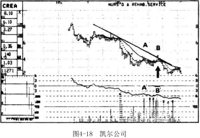
图4-19再次说明了这个问题。克兰德公司的股票相对强度线表现不好。向上突破点（B点）的相对强度水平较低（B‘低于A'）；相对强度线位于零值线的下方，股价位于下降通道中。另一个值得警惕的信号是B点的突破缺乏成交量放大的确认。接着，克兰德的股票走势反转，在一个上涨的市场中下跌了40%。
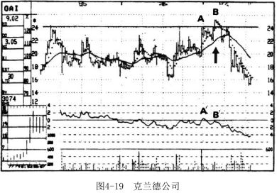
这些就是本节的内容。忽视相对强度线是非常危险的。我们要找的是最好的买入对象，而不是表现一般的股票。相对强度线能够帮助你在今天就瞄准明天的大牛股！
买股快捷指南
在进一步探讨之前，我们来看一个好用的指南，它能为你做两件事。
第一，帮助你快速浏览我们前面学过的买入股票的重要步骤。
第二，当你在寻找新的买入标的时，它可作为参考帮你确定正确的选股步骤。
•检查整个市场的主要趋势。
•挖掘在技术上表现不错的几个行业。
•将这几个行业中有上涨潜力但目前仍处于交易区间的股票列入清单。记录下每只股票可能的向上突破的价位。
•缩小清单范围。剔除在上涨后不久就将遇到阻力区域的那些股。
•通过检查相对强度进一步缩小清单范围。
•对符合所有买入标准的几只股票下达撤销前有效的止损买单，买入拟持仓数量的一半。
•如果向上突破时成交量放大，回抽时成交量萎缩，就在股价回落至首次突破点附近时买入拟持仓量的另一半。
•如果成交量的变化不理想，也就是说在向上突破时成交量没有明显放大，就在股价第一次上涨后卖出。如果这只股票不仅没能上涨反而跌回到突破点以下，就立即卖出。
关于买入的进一步提示
我前面提到的买入过程中的各个步骤都十分重要。如果将重要性以1~10来区分，10表示最重要，那么这些步骤的重要性都是10!如果你忠实地执行了这些步骤，将获得惊喜。现在我要教给你一些进阶方法。这些方法不像前面的步骤那么至关重要，但它们可以进一步提升你的利润。
当你阅读大多数技术分析书籍时，你很快就会被各种奇怪的形态弄晕，如什么三角形、三角旗形、旗形等。我不是说这些花哨的形态没用，而是说要在市场中斩获丰厚利润，它们不是最重要的。在本书开始时，我承诺过，我只介绍最重要的技术指标。所以，什么碟形底啦，什么楔形战术啦，我都不会提。但是，有几种形态，你必须熟悉，它们既好认又能帮助你赚钱。
第一个就是头肩底形态。这是所有底部形态中最有力和最可靠的一种。大多数投资者听说过它，但其中只有少数人在看到它时，能够真正知道。实际上，技术分析新手们常常觉得在每一幅图形中都看见了头肩底形态，就像医学院的一年级新生经常担心自己会染上所学过的每一种疾病。
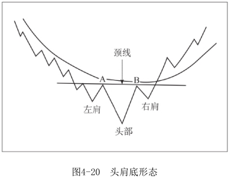
当一只股票经历了大幅下跌又酝酿着要快速向上反弹的时候，就会出现强劲的头肩底形态。图4-20显示了头肩底形态的主要特征。
①首先要有一次下跌使得XYZ跌落至一个新的低点，接着又有一次因为超卖引起的反弹（A点）。这样，形态的左肩就形成了，但是此时进行判断还为时过早。
②接下来这只股票继续下跌，跌至第四阶段中的一个新低。此时反弹的信号出现了。
③一旦急迫的卖压结束，XYZ就令人惊奇地反弹回跟上次反弹时相同的阻力区域附近（B点）。在这一不同寻常的上涨的基础上，头部形成了。而在此之前，创新低之后的反弹都远达不到先前高点。尽管现在买入还太早，但你已经能感觉到某些事情正在发生。
④接着还会发生另外一次下跌，但并不创新低。实际上，这次下跌甚至都不会跌至上次的低点，这是另外一个微妙的利好信号。理想状态下，反弹的高点（A点和B点）应该大约在同一价格上，而分布在下方头部两侧的两个低点价格也应该大致相同。但这并不是绝对的。对应的两个高点和低点的价格水平可能会有些差别，但它们在形态上一定会有某种程度的对称。
⑤在这一次下跌结束之后，股票再一次上涨，图形的右肩形成了。
另外需要注意的就是，图中的A点和B点可以用一条趋势线连接起来，这条线叫作颈线（neckline）。要密切关注颈线，因为一旦股票向上突破颈线，就释放出明显的上涨信号。千万不要过早行动。在很多例子中，这种头肩底的形态一直都不会完成，有的反而会向下突破。
关于头肩底的成交量有各种说法。大多数理论认为：如果在左肩成交量最大，头部有所减少，在右肩成交量萎缩，那么就是上涨征兆。但其实成交量在这个形态中并不那么重要。在研究了大量反转形态之后，我认为，在头肩底图形中，成交量不是一个预测股票未来上涨潜力的好指标。
有两个重要并且可靠的指标，都来自我的操作系统，并且绝对不能忽视。
A、第一个是30周均线。首先，确定30周均线有好的形状。这条均线不再下降，股价向上突破阻力区域之后，站在了均线上方。如果均线正在下降，即使股价向上突破了颈线，甚至向上突破了均线，也不要买入它。如果均线停止下降，你可以在股票回调至均线附近时买入。如果股价向上突破了颈线之后，仍然位于均线的下方，那么要等到股价越过均线才可以买入。
B、第二个重要的指标就是当股价向上突破颈线和均线之后的成交量。在股票的头肩底形态形成过程中，你不用花太多时间考虑成交量的问题，而形态一旦形成，你就应该密切关注成交量。关于成交量，我们前面学过的规则仍然适用。向上突破必须有成交量的明显放大才能确认，否则向上突破就不可靠。
在日线图中辨认头肩底形态要比在周线图中容易得多。先看日线图（见图4-21），再看周线图（见图4-22），你就会明白我的意思。不过，真正强有力的形态即使在周线图上也能辨认出来。现在我们开始练习，这样你很快就可以迅速辨认出这样的形态。（注：周线被日线放大）
首先看图4-22。一旦股价在24．875元处向上突破颈线，这就是确定的买点。成交量进行了确认，相对强度在改善，因此可以预料这只股票接下来几个月内会大涨。
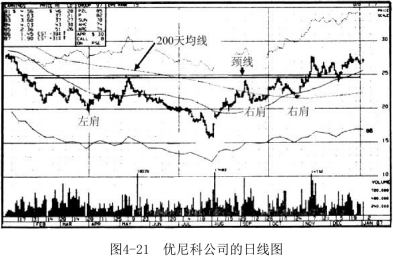
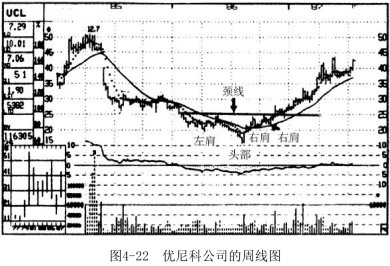
现在请看图4-23，图中的头肩底形态形成时间超过了一年。通常头肩底形态的形成比这要快得多，但不是说时间长头肩底的效力就降低。我们要密切关注股价的Z字形波动（即N形波动），因为它们透露出一些信号。
首先，ASA公司的股价于1985年底跌至32元的低点，然后反弹到接近41元，此时，倒置的左肩就形成了。请注意，在这个左肩区域内还有一个小的潜在底部形态（注：红箭头处），伴随着一个在41元处的小的向上突破。你不应该考虑在该点（41元）买入它，因为此时其均线仍然是下降的，目前股价上方45元的阻力区域仅仅是几个月前才形成的。
接着，再一次猛烈的下跌让ASA一路跌至28元。然而，与之前的普通反弹不同，接下来这只股票突然迅速反弹。它反弹至何处？恰好反弹至前次的高点附近，在41.5元处开始回落。这样，倒置的头部就形成了。ASA能够在跌至新低之后，强力反弹到前一次反弹高点的略上方，这是重要的信号，意味着积极的买家正开始回到这只股票上来。
接着，ASA的股价下降到34.375元，大约比左肩内的低点高出2元。一旦下一次反弹开始，右肩就形成了。我们将两次反弹的高点（A点和B点）连接起来得到颈线。
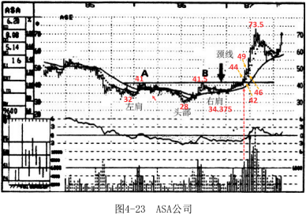
现在我们就等待和观察。当ASA股价在42.5元处越过颈线时，你的止损买单就会被执行。突破时成交量放大，这是令人鼓舞的信号。相对强度在突破前数周内以及突破后大幅改善，这也是利好的信号。
最后，尽管在45元附近有阻力，但已经是差不多两年前的了，其有效性已大大降低。如果“故障防护”措施到位，你就可以买入一半的拟持仓量。当你在周线图中还不能轻易地辨认出头肩底的时候，ASA的股价已经迅速超过44元，接着回落至42元附近，此时可以加仓买入。
接下来，股价上涨至49元，又回调至46元，此时是最后的买入机会，之后它就飙升到了73.5元。
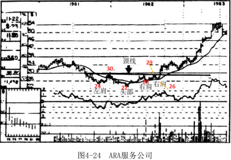
ARA服务公司（见图4-24）提供了研究头肩底形态的另一个视角。稍作研究，你会发现相同的有利图形正在形成。
首先，股价下跌至24元附近的低点，当ARA反弹至30元时，左肩形成。
接着，1982年初这只股票下跌至22元附近这一第四阶段新低。在这之后，买方进入，将股价拉升至前一个高点价格附近，头部形成。连接两次反弹高点得到颈线。
紧接着ARA股价跌至25元，在前期低点24元之上企稳。现在出现了一个你应该注意的有趣现象：股价再次反弹回29元附近，但是没有向上突破，在这之后它又下跌至26元以下，然后才又再次反弹。因此，这个头肩底有两个右肩（同样的情况也出现在优尼科公司股票的头肩底图形中，见图4-21和图4-22）。这种情况并不少见，也不会降低形态对上涨趋势的预测价值。纯技术论者认为如果图形中有两个右肩，就应该有两个左肩。我不同意。只要必要的条件具备了，不需要严格对称。不管怎样，一旦向上突破颈线，在30元处买入ARA的股票就是一笔好买卖。同时，有明显放大的成交量和很好的相对强度也可以帮助我们确认。
你现在开始明白应该寻找什么样的股票了吗？要习惯于发现有效的第一阶段头肩底形态，这相当重要，因为这类形态强劲有力，它们不像初学者以为的那样经常出现，但它们一旦出现，你就应该认得出来并把握住机会。
现在学习图4-25日照矿业和图4-26天合汽车集团。它们会帮助你训练辨认这种上涨形态的眼力。
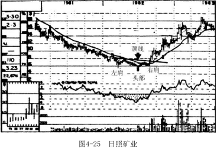
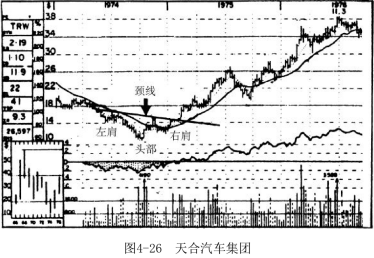
最后，头肩底形态还可以作为辨别整个市场和某个行业情况的指标。一两个单独的形态并不能说明整个市场的状况，但在同一时间段内出现若干这样的形态就可以说明了。
例如，在1974年末以及1982年中期，市场上出现了很多头肩底形态，这些形态就是整个市场走牛的一个指标。如果你记得这段历史，就会知道这两个时点是两个大牛市的初期。
同样的道理，在同一行业中出现多个这样的形态对这个行业来说是强烈的多头信号。关于头肩底形态在行业中的应用，1986年有个绝佳的例子。与石油相关的股票——石油、石油钻探和石油服务的股票都在1986年构筑了头肩底形态，后来，整个石油行业成为1987年的股市大赢家之一。
双重底
尽管我下面要讲的形态不像头肩底那么强劲，但它也预示着可观的上涨，尤其是当明显放大的成交量、很好的相对强度和最小的阻力区域与它一同出现时。
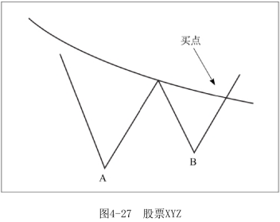
从图4-27中可以看到，XYZ首先跌到一个低点（A点），接着当卖压减小时反弹。接下来的第二波抛售使得XYZ一路下跌至前一个低点附近水平（B点）。如果这次的卖压没能使这只股票的价格创新低，这就是一个利好信号。如果B点仅稍低于A点，出现了股价的新低，也没有太大关系。重要的是看股价的第二次反弹是否能达到前一个高点。在此以后，向上突破就可以立即发生。
在某些情况下，股票会横盘数周，再向上突破进入第二阶段。不要去预测底部是什么形状，不要过早买入。
在一些例子中，向上突破始终没有发生，股价反而跌至新低。
在另外一些情况下，向上突破可能在几个月之后才发生，在那之前你可能已经沮丧不已并且卖出了股票。
这种图形在几个星期里形成是很正常的，如图4-28和图4-29所示。然而，在为数不多的例子中，它会花费很长的时间，就像在哈弗德工业公司的图形（见图4-30）中显示的那样。现在请看一下这三幅图。
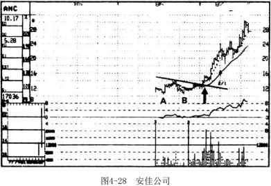
在图4-28中，安佳公司的股票价格跌至10元附近（A点），又反弹至14．125元。在1986年末的第二次抛售使得股价回落至10．5元。
接着，一次缓慢的反弹开始了，成交量也开始放大（一个利好信号）。然而，在达到13．5元后，反弹没能向上突破14．125元的重要阻力区域，并在接下来的几个星期内进一步盘整。接着，当这只股票向上突破其趋势线和14．125元的阻力位之后，第二阶段的上涨就开始了。
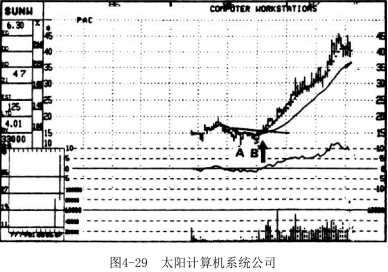
在太阳计算机系统公司的例子中（见图4-29），双重底形态形成得很快。当它向上突破15．25元处的阻力位时，这只股票已准备进入上升通道。
注意，当相对强度线进入正值区域后，其表现相当不错。同时，成交量的放大也很明显。
最后，一旦股价站上20元，上方就不再有阻力。
对于哈弗德工业公司（见图4-30）来说，双重底的形成长达15个月。但是一旦底部形态构筑完成，股票向上突破8元的阻力位，结果就和安佳公司以及太阳计算机系统公司一样。
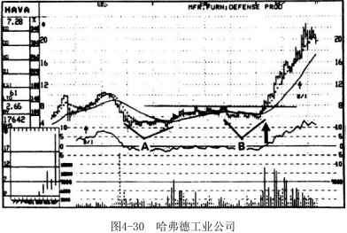
对整个市场来说，你也可以去辨识这样的形态。1974年末，在经历了1929—1932年以来最大的熊市之后，道琼斯工业指数出现了一个强劲的双重底形态（见图4-31）。在下跌至B点之后，接下来的反弹使得大盘指数向上突破了下降趋势线和30周均线。1975—1976年的牛市就此拉开了序幕。
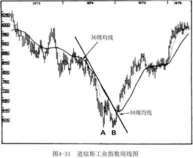
对于双重底要非常小心，因为它们经常形成。而有效的头肩底则比较少见。必须严格保证要买入的股票满足我们之前学过的各种标准，这样你就不会买入差的和很差的双重底股票。
底部越宽越好
在技术分析师圈子里有句老话——“底部越宽，涨得越高”（相应的推论是，“头部越宽，跌得越多”）。我非常认同这句话。虽然有很多底部较小，但符合其他买入标准的股票最终出现了不错的上涨，不过我们还是应该特别留意那些有着宽广底部的标的。这非常重要，因为宽广的底部形态往往会对应着范围更广、持续更久的上涨。
凭直觉，这个理论很有道理。这就像一所大房子需要非常坚固的地基一样，宽广的底部能推动股价在较长的时间里上涨。
从技术分析层面看，这个观点也是有道理的。较宽广的底部意味着在第一阶段有大量的换手。许多暴跌时被套的投资者不再抱有幻想，他们想解套离场，最后他们在第一阶段中带着厌恶之情将股票以低价卖给一群新的买方。这使得股票上涨的阻力减少。而新的持有者会更加耐心，会在卖出之前等待这只股票出现明显的上涨。
下面就是两个宽广底部的例子。
美洲巴利克资源公司（见图4-32）在1986年初向上突破4元附近的阻力区域，在之后的15个月中上涨接近400%。我前面强调的所有标准它都符合。在它向上突破阻力区域之前，它的底部阶段持续时间很长。成交量不仅在向上突破时急剧放大，而且在突破发生前的几周内就已经开始明显增加。此外，上涨通道中不存在离目前股价较近的阻力区域，并且突破发生时相对强度线也进入了正的区域。
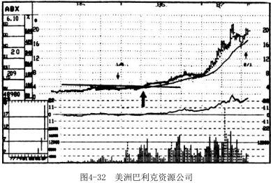
1986年韩国基金（见图4-33）也出现了类似利好指标云集的情况。当这只股票向上突破18元阻力位时，意味着它已经完成了长时间的底部构筑，即将大幅上涨了。在接下来的一年半里股价上涨至86元。在这个例子中，成交量、相对强度以及附近不存在阻力区域等指标都像教科书一般完全符合标准。
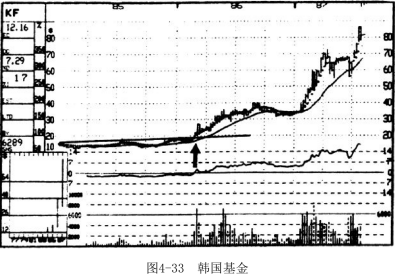
前面几章中我们已经学习了很多内容，现在我们暂停一下，回想一下我们已经学过的内容。现在你应该已经明白，在市场中盈利需要遵守投资纪律，并且你已经能够辨认出我们反复提到的、与大牛股有关的各种形态。你还应该意识到，越多有利的指标聚集在一起，我们成功的可能性就越大，我们的收获也就越多。
我的投资戒律
现在对于什么时候买入以及买入什么你已经熟悉了，下面是我总结的什么时候不能买入以及不能买入什么的戒律。尽管这个戒律不长，但它却是智慧的结晶。如果你能彻底学会它们，并且保证在未来绝不违反这些戒律中的任何一条，那么你会发现你在市场中的经历会更加有趣、更能获利。
•当整体市场趋势走熊时，不能买进。
•不能买入弱势板块中的股票。
•不能买入股价位于30周均线以下的个股。
•不能买入其30周均线呈下降趋势的个股，即使股价位于均线上方。
•无论一只股票有多牛，也不要在其上涨后期买入，此时股价已经远远高于理想的买入点。
•不能买入向上突破时成交量放大不明显的个股。如果你用止损买单买了它，赶快把它卖掉。
•不能买入相对强度弱的个股。
•不能买入上方有强阻力区的个股。
•不能猜测底部。有些股票跌了一段后看起来很便宜，结果你买入后发现它正在经历第四阶段下跌，你其实买得很贵。与这样的做法不同，你应该在股票向上突破阻力区域之后才买入。
测 试
1．当一只股票向上突破阻力位，创出股价新高时，是非常积极的信号。 正确 错误
2．相对强度衡量的是一只股票与其成交量相比，其表现如何。正确 错误
3．如果一只股票向上突破时整个市场趋势很好、所在行业表现强势、上涨阻力小，那么即使成交量没有明显放大也可以买入。正确 错误
4．底部区域的成交量变化比向上突破时成交量的变化更重要。正确 错误
5．阻力区距离买入点时间越久，其效力越低。正确 错误
6．即使一只股票在下跌，它仍可能有比较好的相对强度。正确 错误
7．在一次大幅下跌之后最强劲和可靠的反转形态是均线上方的双重底。正确 错误
8．下图是头肩底反转形态的例子。正确 错误
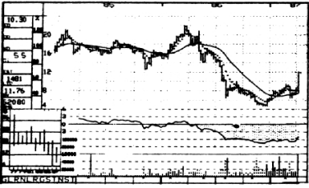
9．假设下面两个例子所处的市场环境和所在的行业表现都不错，你会买入哪一只？
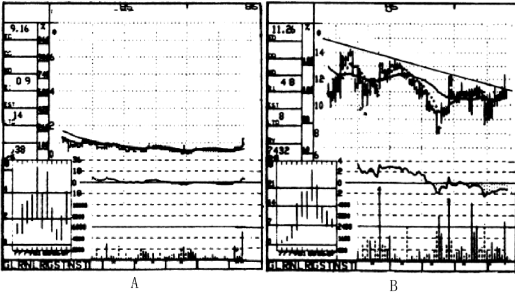
10．假设下面两个例子所处的市场环境和所在的行业表现都不错，你会买入哪一只？
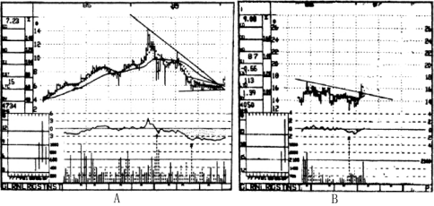
11．你会买入下面两只股票中的哪一只？
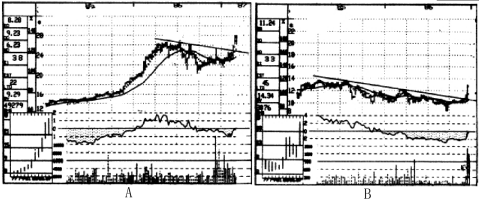
12．假设下面三只股票所处的市场环境和所在的行业表现都不错，你会买入哪一只？
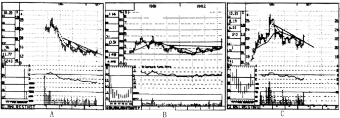
答 案
1．正确。没有进一步的阻力可抑制涨势。
2．错误。相对强度衡量的是一只股票与整个市场相比表现如何。
3．错误。绝对不能忽视向上突破时成交量的不足。这是个非常重要的危险信号，意味着突破缺乏持续动力。
4．错误。在第一阶段的底部，成交量不是那么重要，但在向上突破时成交量非常重要。
5．正确。
6．正确。如果一只股票下跌，但在同样的时间段内跌幅小于整个市场的跌幅，就说明它的相对强度较好。
7．错误。最强劲和可靠的反转形态是均线上方的头肩底形态。
8．正确。
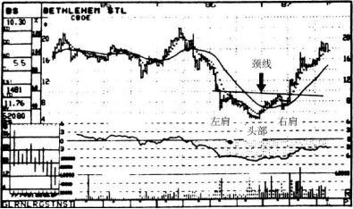
9．A。
在例A中，股价上方附近没有阻力区域存在，而B显示其股价上方附近存在大量的阻力区。
此外，A有着较大的底部（18个月），而B的底部较小（6个月）。
另外，A的向上突破得到了成交量急剧放大的确认，而B的成交量变化不明显（虽然其成交量是突破前四周平均成交量的两倍，但是低于底部阶段中另外两周的平均成交量）。
在相对强度方面，A的强对强度不断变好，而B的相对强度表现较差（处于负值区域中，突破点对应的相对强度还低于底部阶段开始时的相对强度）。
最终的结果就是股票A（迈凯德公司）1986年中期在1.125元处向上突破，1年后涨到7.625元。同时，股票B（阿尔法工业公司）在1986年于11．5元处向上突破，1年后跌到6．375元。
10.B（美国有线电视公司）。
当美国有线电视股价向上突破时，其相对强度正在改善，而IRT公司（A）的相对强度表现平平。此外，IRT股票在8.5元附近有很强的阻力区域（是向下突破前的支撑区域）。而美国有线电视公司的股票虽然在16~17元区间存在阻力区域，但不是特别强，而且在其上方就再也没有阻力区域了！结果，IRT股票在1987年初于6.25元处向上突破，8个月之后下跌了35%。美国有线电视公司的股票在同样的时间向上突破了15.125元的阻力区域，7个月后股价上涨了85%。
11.B（菲塞特公司）。
在国家服务公司（股票A）图形中，最大的不利因素就是当股价再次向上突破时，成交量非常不理想。而B向上突破时得到了成交量放大的确认。
此外，当菲塞特的相对强度明显改善时，国家服务公司的相对强度表现平平。菲塞特图形上唯一的不利因素就是在14元附近存在阻力区域，不过这个区域已经存在了18个月，并且底部足够大，能够支撑股价突破它。
最后，它的成交量变化极其明显，非常值得投资。菲塞特的股票在10.5元处向上突破，8个月后股价达到23.125元，上涨超过一倍多。而国家服务公司的股票在25.75元处向上突破，6个月之后股价仅仅上涨至26.25元！
12.你应该选择股票B（活动房屋公司）。应该在它1982年突破3.25元时买入。
1987年，活动房屋公司股票向上突破时相对强度线表现非常好，而股票A（罗斯柴尔德公司）和股票C（芝加哥铆钉机械公司）在1987年突破时，其相对强度线的表现一般。此外，活动房屋公司在三只股票中底部是最大的，而且向上突破了水平的趋势线，而另外两只股票突破时，趋势线还是向下的。所以，我们毫不惊异，当罗斯柴尔德的股票在14.25元处向上突破5个月后，股价仍然是14.25元；而芝加哥铆钉机械公司的股票在22元处向上突破之后6个月，跌到了21元；活动房屋公司的股价则在接下来的1年里上涨了300%。
不要把所有的鸡蛋放进同一个篮子里
现在你已经知道了买什么不买什么，接下来我们要学习关于买入的最后一项内容：多元化投资。不管你对我的这套方法有多熟悉，不要期望做到完美。未来充满了太多不确定性。大多数时候保持正确是可能的，但这也意味着有时会犯错。为谨慎起见，你应该投资若干股票来分散风险。这样可以避免一着不慎满盘皆输的情形出现。
即使你以止损卖出操作（我将在第六章教你）来保护你的多单，但如果不采取多样化的投资策略，你仍然可能会损失惨重。如果你将全部的资金都投资于一只股票，一旦这只股票下跌15%，你的损失就会很大。如果你不幸第二次又赔了15%，你的本金就会损失惨重。但是如果你将所有的资金平均分配到15只股票上面，即使其中一只股票下跌15%，你的整体本金也仅损失了1%。
1987年初的《专业价格分析者》中给出了一个多元投资法则的好例子。1月初我推荐买入的三只股票分别是德拉沃公司（见图4-34）、坦顿公司（见图4-35）和得州仪器公司。
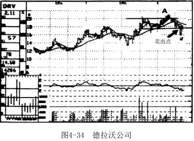
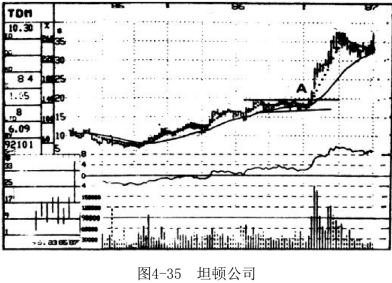
德拉沃的股票向上突破了20元的阻力位（A点）后，创下几年来的新高。遗憾的是，这只股票没再继续上涨，当它向下跌破18元处主要的支撑位后，就从上涨队伍中出局了。而坦顿的股价迅速涨至我们推荐时的19.875元（A点）的两倍左右。得州仪器的股票也表现特好，尽管它用了比坦顿稍长的时间，但还是比我们推荐时的41．875元上涨了一倍。
如果你的全部资金都投在德拉沃上，那么你在从1987年初开始的强劲的上涨行情中只能收获失望。如果你将资金分散投资于三只股票，你就能笑着面对市场行情。
许多参加我的研讨会的人会问：“我的投资组合中应该有多少只股票才好？8只、10只还是12只？”答案是什么？没有一个这样神奇的数字！但是我认为存在一个比较靠谱的大概范围。我认为只有一两只股票的投资组合对于资金的配置来说风险性太大，四五十只又太多，你没法很好地跟踪它们。适当关注你的投资组合，这与当父母很相似。你要看管的孩子越多，照看好每一个孩子就越困难。股票也一样，如果将你的资产配置到50只股票上面，要想清楚地了解每一只的波动是非常困难的。此外，管理投资组合还存在一种倾向，你的大多数精力都会集中到表现较好的股票上面，而不会太关注那些表现不好的股票，你觉得它们会慢慢涨起来。结果，你是在用好股票的盈利去弥补那些差股票的损失。
正确管理你的投资组合的方法是把组合里的每一只股票都当作你持有的唯一一只股票。如果它表现不错，很好，继续持有。但是如果它上涨缓慢，表现不佳，就应该将其卖出，即使没有触及止损点，也应减仓。将资金移到更具上涨潜力的第二阶段股票上。
再说具体点，对于一个投资额在1万~2.5万元的较小的投资组合来说，我认为股票数量最好不要超过6只。但如果你的投资额是数十万元甚至更高，我的建议是同一时段中最多投资10~20只股票。而且，构建投资组合时每一只股票上的投资额应该大体相等，而不是像许多投资者那样每只股票的买入股数相同。他们对每只股票都买入1000股，无论这只股票的价格是每股5元还是40元。用一个整数来说明，如果我们投资10万元在10只股票上面，那么每只股票的投资额应该在1万元左右。因此如果你买入每股50元的股票，你就应该只买入200股，而对另一只价格是每股10元的股票，你就应该输入1000股的买入指令。常识在构建投资组合时很重要。不要将所有的鸡蛋都放在同一个篮子里。但也不能走向另一个极端——用了过多的篮子！
还有另外一种值得注意和实践的多元化投资策略。投资组合里的股票不能全部来自同一个板块。如果三四个板块都显示出良好的技术形态，就分别从这几个板块中选择向上突破至第二阶段的股票买入，而不是仅从其中一个板块买入。这样即使某个板块的表现突然变化，你的投资组合仍然不会受到大的影响。如果你将这两种多元化投资方法加以实践，并且恰当使用我的技术分析体系，你就应该能在市场上年复一年获得非常不错的收益。